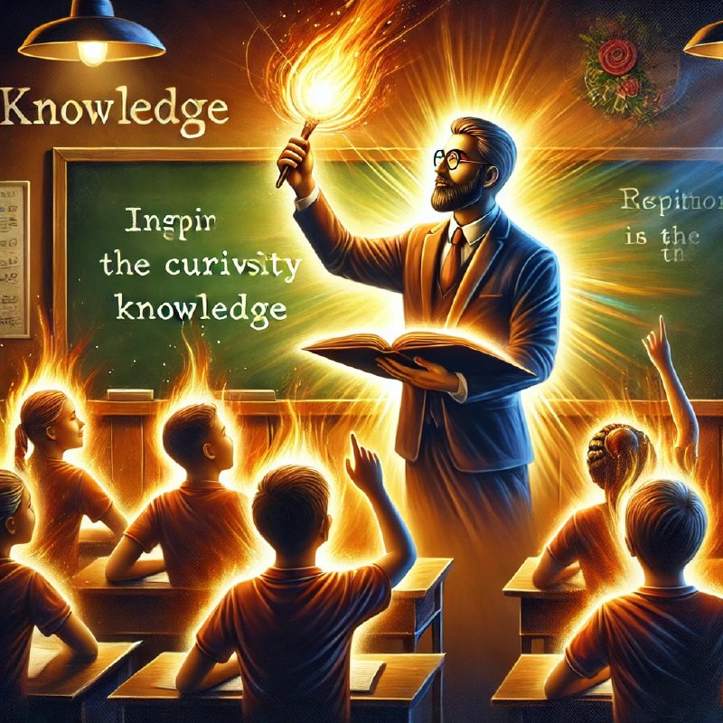

Ўқувчи — бу фақат тўлдирилиши лозим бўлган идиш эмас, балки ёқиладиган машъалдир.

Ўқувчига билим бериш фақат унинг миясини маълумотлар билан тўлдириш эмас, балки унда қизиқиш, илҳом ва мотивация уйғотишдир. Чунки ҳақиқий билим орқали инсон нафақат билим олади, балки уни ўз ҳаётида қўллашга интилади.
Машъални ёқиш учун, аввало, таълим берувчининг ўзи аланга бўлиши зарур. Унинг билимга бўлган иштиёқи, илҳоми ва ҳаётга муносабати ўқувчилар учун катта таъсир қилади. Чунки тингловчи фақат айтилган сўзларга эмас, устознинг ҳис-туйғулари ва хатти-ҳаракатларига ҳам қарайдилар.
Шундай экан, ҳар бир ўқитувчи ўз ишига қалбдан берилган бўлиши керак. У нафақат фани бўйича, балки инсон сифатида ҳам гўзал ва кучли бўлиши зарур. Чунки айнан шу аланга ўқувчиларни буюк ишларга илҳомлантириши мумкин.
Ота-она фарзанд учун ўқитувчидир, тарбиячидир!
Ўқувчиларни “машъал” сифатида кўриш уларнинг мустақил фикрлаш қобилиятини ривожлантиришни ҳам англатади. Улар ўз йўлларини топишлари, ўз ғоялари ва мақсадлари билан яшашлари лозим. Шунинг учун, таълим жараёнида тингловчиларнинг шахсий қизиқишлари, иқтидорлари ва орзуларини ҳисобга олиш муҳимдир.
Ҳақиқий муаллим, ўзининг алангаси билан, ҳар бир шогирдни ёритиб, уларнинг қалбида билимга бўлган муҳаббат уйғотади.
Бундай муносабат ва меҳнат орқали жамиятда чинакам ёруғлик ва илиқлик пайдо бўлади.
Ҳар биримиз муаллиммиз!